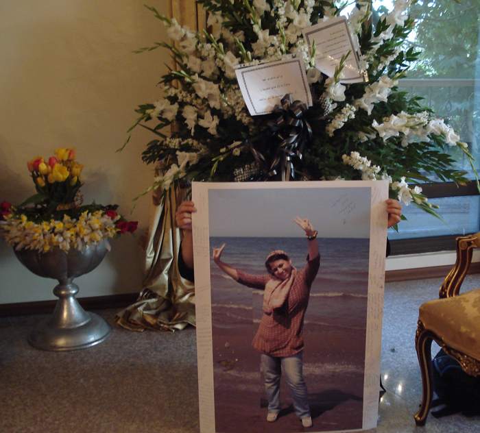
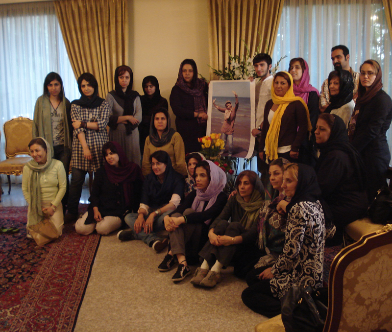

|
|
گرامیداشت بهاره علوی ، دختری که پرواز با بال های شکسته را از سکون دوست تر می داشت
پنج شنبه15 اردیبهشت 1390

تغییر برای برابری - شیرین اردلان - بعد از ظهر روز چهارشنبه چهارده اردیبهشت، مراسم هفتمین روزغروب دختر خورشید، بهاره علوی برگزار شد. در این روز، جمعی از دوستان و یاران بهاره گرد هم آمدند تا مگر تسلی کوچکی بر درد دل نسرین خانم مادر بهاره باشند و یا مگر با نسیم بهاری پیام عشق و دوستی شان را نثار دختری کنند که برای همیشه زنده است و نامیرا.
بهاره همیشه در سفر ، سفری دیگر را آغاز کرده است. از کثرت دوستان او در شهرهای مختلف، می توان پی به وسعت دوستی هایش برد. او که فقط بیست بهار را از سر گذرانده بود و درطلوع بیست و یکمین بهار زندگی، قربانی جاده ها شد.
امروز بار دیگر یاران کمپینی اش از راههای دور و نزدیک خود را به مراسمی که به یاد و خاطره او برگزار شد رساندند تا هم پیمان شوند که آرزوهای آرزو مانده اش را تحقق بخشند.

هر کس با بیان خاطره ای و یا نوشته ای یاد او را گرامی می داشت. یکی از دوستانش با تهیه کلیپی کوتاه و نمایش تعدادی از عکس های بهاره خنده های پر شور دختری را به تصویر کشید که امید به زندگی در چهره اش موج می زد. همچنین هر یک از حاضرین در مراسم با نوشتن جمله ای بر تصویر این دختر شرقی، احساس خود را به او نشان دادند به این امید که با ارسال آن برای مادر بهاره ذره ای از درد او را التیام بخشند.